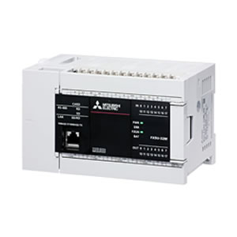
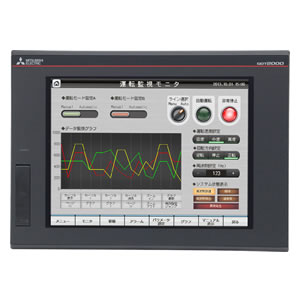
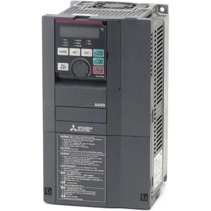
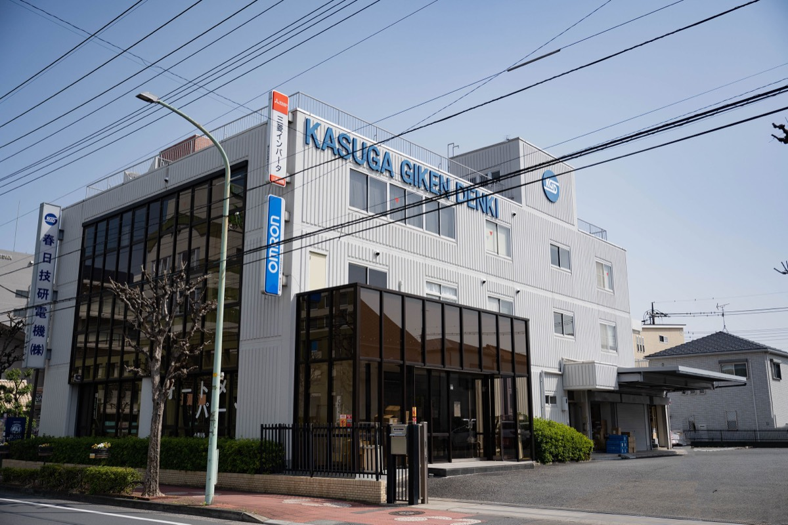

埼玉県川口市・1945年創業
必要な時に、
必要な量を。棚にあります。
シーケンサー、ACサーボ、インバーター、センサー、リレー。制御機器24分類を取り扱う商社です。メーカーと直結した販売管理システムで受注から在庫管理までを一括管理し、必要な商品をすぐにお届けできる体制を整えています。
24分類
取扱商品の区分
3拠点
川口・熊谷・八潮
1945年
創業
3,000万円
資本金
SUPER EXPRESS
即納体制
お客さまが必要とする商品・情報を、必要な時に、必要な量を、スピーディにお届けする。そのための体制を完備しています。
メーカーと直結した販売管理システムにより、受注から在庫管理までをコンピュータで一括管理し、迅速な対応をはかっています。
ご相談にいつでも訪問
お客さまの現場に密着し、先進の技術力と豊富なアプリケーションノウハウで最適な商品をご提案します。ご相談にはいつでもご訪問できる体制です。
3グループの連携
FAシステムグループ、FAコンポグループ、特販グループ。3グループがつねにリンクしながら、小規模から大規模まで柔軟に対応します。
環境への取り組み
2007年12月にISO14001の認証を取得し、2017年12月に2015年版へ移行しています。
SERVICE
できること
コンサルティング、システムエンジニアリング、ソフトウェア、サービス。この4つの面から、お客さまの課題にお応えします。
システムクリエイター
現場に密着したコンサルティングでお客さまのシーズやニーズを引き出し、専任のシステムエンジニアが現場の特性・効率性・経済性をふまえ、ハードウェア／ソフトウェアの両面からシステムを設計・提供します。機器の納入から設置、システムの立ち上げまで責任をもって承ります。
インテリネット
FA関連のソフトウェア会社と提携し、FAコンピュータ・PC（プログラマブルコントローラ）・コンポーネントといったハードに加え、マシンレベル／セルレベル／工場レベルなど各階層に応じた通信用ソフト、CAD/CAMソフトを提供します。
スーパーエキスプレス
必要な商品を必ずお届けできる即納体制。メーカーと直結した販売管理システムで、受注から在庫管理までを一括管理しています。
PRODUCTS
取扱商品
制御盤・装置の構成に必要な部品を、24の分類で取り扱っています。



取扱分類の一覧
- シーケンサー・周辺システム
- 表示器
- ACサーボ・インバーター
- 高機能センサー
- 一般リレー
- タイマー・カウンター
- 温度調節計
- リミットスイッチ・マイクロスイッチ
- 回転灯・表示灯
- 操作スイッチ
- 信号変換器
- パネルメーター
- 電磁接触器・電磁開閉器
- ブレーカー・漏電ブレーカー
- トランス
- 計測機器
- 汎用モーター・ギヤードモーター
- 空圧機器
- 端子台
- 基板用リレー
- コネクタ
- 圧着端子
- 電源
- 制御・計装ボックス
OFFICES
拠点

本社
〒332-0032 埼玉県川口市中青木5-10-11
TEL 048-255-3055（代）
FAX 048-255-8426
熊谷営業所
〒360-0803 埼玉県熊谷市柿沼339-2
TEL 048-521-4884（代）
FAX 048-521-4893
1985年4月開設
埼玉東営業所
〒340-0806 埼玉県八潮市伊草1-1-1 YSビル1階
TEL 048-995-5900（代）
FAX 048-995-5677
1991年10月開設（草加・八潮地区）
COMPANY
会社情報
弊社の企業理念は、制御機器のセールス・エンジニアリング活動を通じ地域社会に貢献することです。お客様のニーズに応え、合理化・先端化のお役に立つことで地域社会に恩返しをして、ともに豊かに楽しく暮らしていくことが理想です。
— 代表取締役 天一 彰夫
- 商号
- 春日技研電機株式会社（KASUGA GIKEN DENKI Ltd.）
- 代表取締役
- 天一 彰夫
- 創業
- 1945年（昭和20年）12月
- 設立
- 1959年（昭和34年）10月
- 資本金
- 3,000万円
- 会社敷地
- 1,250㎡（380坪）
- 建築総面積
- 1,050㎡（310坪）
- 業務内容
- 自動制御部品および電子機器の販売／FAシステム設計制作
- 認証
- ISO14001（2007年12月取得、2017年12月に2015年版へ移行）
- 取引銀行
- 三菱東京UFJ銀行 西川口支店／埼玉りそな銀行 西川口支店／みずほ銀行 西川口支店／川口信用金庫 本店／巣鴨信用金庫 中青木支店
沿革
NHKを退社した創業者が、家庭電機製品の販売から始めた会社です。1970年にその販売を撤退し、制御機器に絞りました。
- 1945.12
- 前会長 天一慶三郎が、同年10月にNHKを退社し、川口市金山町にて個人企業として春日無線電機商会を創業。家庭電機製品の販売を開始
- 1959.10
- 事業の拡大に伴い、春日無線電機株式会社を資本金150万円にて設立。さらに電装部を設け、制御部品の販売および制御盤の設計製作を開始
- 1965.11
- 川口市金山町より川口市並木3丁目に本社および工場を移転
- 1970.09
- 制御部品の需要の増大に伴い、家庭電気製品の販売を撤退
- 1971.04
- 春日技研電機株式会社に社名変更
- 1976.07
- 資本金500万円に増資
- 1977.07
- 資本金1,000万円に増資
- 1982.07
- オフィスコンピュータ（三菱 MELCOM80）の導入により事務の合理化を推進
- 1984.03
- 事業の拡大に伴い、川口市並木より現在地・川口市中青木5丁目に移転
- 1985.04
- 熊谷営業所を開設
- 1990.06
- オフィスコンピュータを IBM AS400 に増強し、ネットワークを推進
- 1991.10
- 草加・八潮地区に埼玉東営業所を開設
- 1997.07
- 天一彰夫 代表取締役に就任
- 1999.04
- 社内LAN・インターネット等のインフラを整備
- 2001.07
- 資本金3,000万円に増資
- 2003.02
- 電子部品販売部門を新設
- 2007.12
- ISO14001 認証取得
- 2017.12
- ISO14001 2015年版へ移行
型番が決まっていなくても、ご相談ください。
現場に伺い、最適な商品をご提案します。制御盤の設計製作から、FAシステムの立ち上げ、アフターフォローまで。川口・熊谷・八潮の3拠点から対応します。
048-255-3055
FAX 048-255-8426
〒332-0032 埼玉県川口市中青木5-10-11